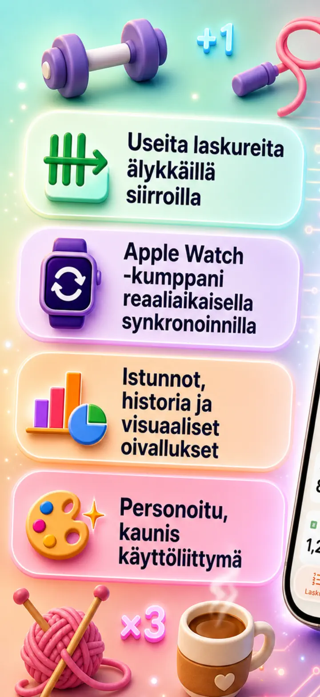
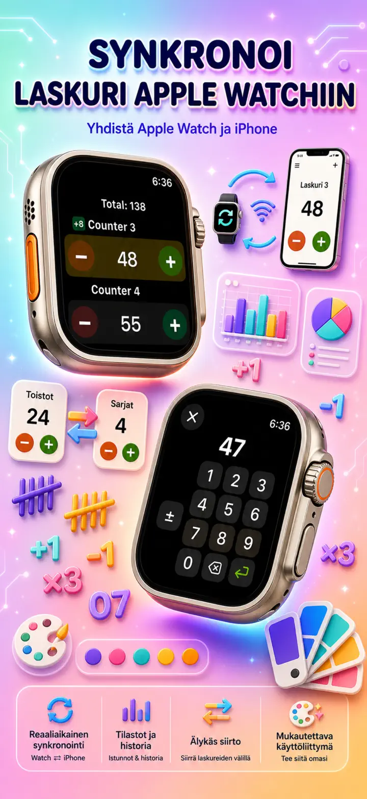
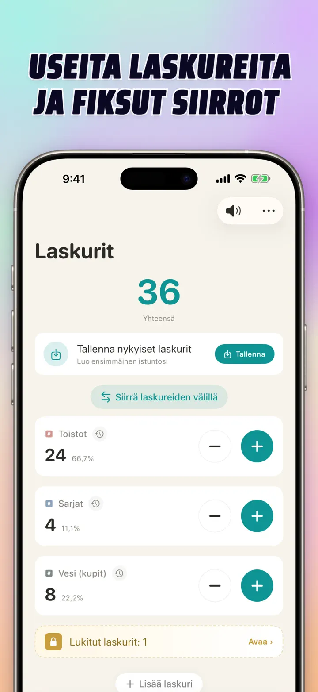
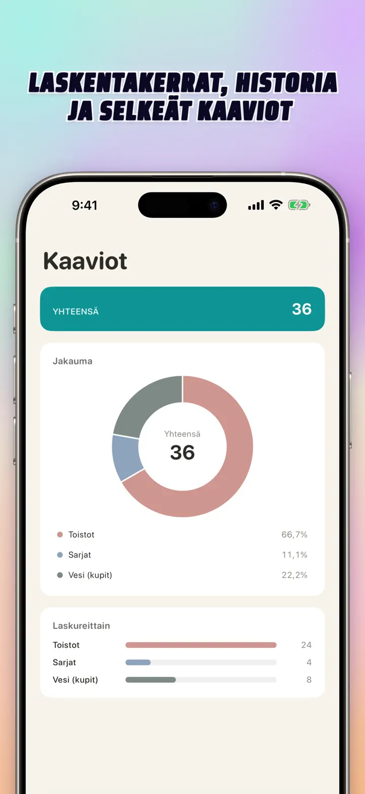
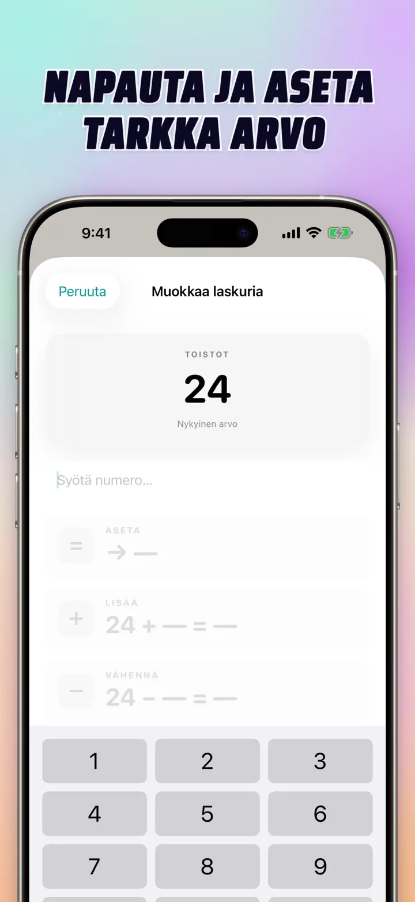
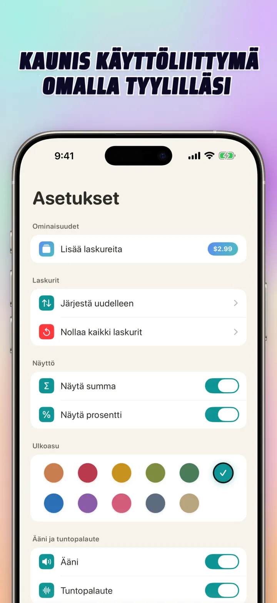
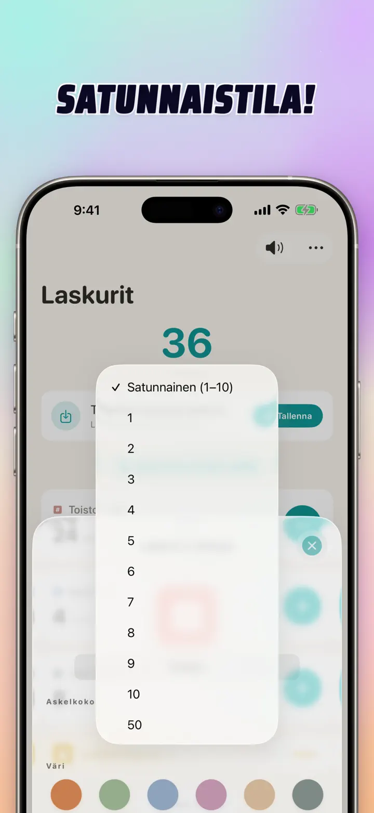

Laskuri 123
Watch-synk, napit, pisteet
Uutta: Koti-valikon widgetit — napauta +/- widgetissä avaamatta appia. Laskuri ja napautin, Apple Watch -synk, satunnaistila, kaaviot ja historia.
Lataa App Storesta
Tietoja apista
Laskuri 123 on nopea ja joustava laskuri iPhonelle, iPadille ja Apple Watchille. Nimeä laskurit, valitse väri ja laske mitä tahansa — salitoistot, neuleen kerrokset, rukousnauha, pisteet luokassa, varasto, pelin pisteet. Kaikki pysyy paikallisesti laitteella, toimii offline-tilassa.
MUKAUTETTAVAT LASKURIT
- Luo erilliset laskurit aktiviteeteille, peleille, rutiineille tai listoille
- Oma nimi ja väri jokaiselle laskurille
- Vedä järjestääksesi uudelleen
- Pidä pohjassa nopeaan laskentaan
- Täysin offline — ei rekisteröitymistä, ei pilveä
SUORA SYÖTTÖ JA JOUKKOTOIMINNOT
- Kosketa laskuria asettaaksesi aloitusarvon suoraan — ei tarvitse nollata ensin
- Joukko +/-: muuta laskuria millä tahansa luvulla yhdellä kosketuksella
- Siirto: siirrä arvo laskurista toiseen ilman kaksinkertaista toimintoa
- Oma askel: yksi kosketus lisää 1, 5, 10, 100 tai valitsemasi luvun
- Elävä esikatselu jokaisesta muutoksesta
SATUNNAISTILA
- Anna laskurin arpoa uusi arvo 1-10 jokaisella napautuksella
- Lisää tai vähennä satunnaisia arvoja plus- ja miinuspainikkeilla
- Sopii harjoituksiin, peleihin, palkintoihin, luokkatehtäviin ja rutiineihin
- Jokainen satunnainen napautus tallentuu laskurin historiaan
SUMMAT JA KAAVIOT
- Kaikkien laskureiden yhteissumma yhdellä silmäyksellä
- Prosenttinäkymä: kunkin laskurin osuus kokonaisuudesta
- Interaktiivinen pylväskaavio — vaihda arvon (#) ja prosentin (%) välillä
- Järjestä arvon mukaan välittömään sijoitukseen
HISTORIA JA JAKAMINEN
- Täysi historia: jokainen lisäys, vähennys ja muokkaus kirjataan
- Tallenna laskurijoukkoja ja lataa ne uudelleen hetkessä
- Jaa kokoonpanoja joukkueen, oppilaiden tai ystävien kanssa
- Katso historia päivälokina, ryhmiteltyinä sessioina tai päivä/viikko/kuukausitilastoina
LIVE-SYNKRONOINTI APPLE WATCHIN KANSSA
- Päivitä laskuri iPhonessa tai Apple Watchissa, ja arvot pysyvät synkassa
- Aito natiivi watchOS-sovellus — ei pelkkä kumppani
- Nimet, värit ja arvot synkronoituna ranteessa
- Kosketa laskeaksesi, pidä toistaaksesi — suoraan kellosta
- Toimii itsenäisesti kun iPhone ei ole lähellä
iPhonelle, iPadille JA APPLE WATCHILLE
- Responsiiviset asettelut kaikenkokoisille näytöille
- iPad näyttää enemmän laskureita kerralla, tukee Split View -tilaa
- Yksityisyys edellä: paikallinen tallennus, ei pilveä, ei tiliä
SOPII KÄYTTÖÖN
- Sarjat ja toistot salilla
- Neulekerrokset ja virkkaussilmukat
- Rukousnauha, tasbih, rukoushelmet
- Pisteet luokassa ja läsnäolo
- Käsipallo, lentopallo, jalkapallo — nopea tulos
- Pöytätennis
- Varaston inventointi
- Lautapelit, korttipelit, bridge, kanasta
- Allas- ja juoksukierrokset
- Lintujen tarkkailu
- Osallistujien laskenta tapahtumissa
- Tapojen ja tavoitteiden seuranta
Lataa Laskuri 123 ja tee jokaisesta laskennasta helppoa — selkeää, nopeaa, yksityistä.
Tietosuojakäytäntö: https://masawata.net/privacy-policy.html Käyttöehdot: https://www.apple.com/legal/internet-services/itunes/dev/stdeula/
Näyttökuvat






Laskuri 123
Uutta: Koti-valikon widgetit — napauta +/- widgetissä avaamatta appia. Laskuri ja napautin, Apple Watch -synk, satunnaistila, kaaviot ja historia.
Lataa App Storesta